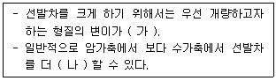
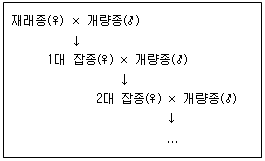

축산기사 (2020-08-22 기출문제)
1과목: 가축육종학
1. 돼지에서 일반적인 복당 산자수의 유전력범위로 가장 적합한 것은?
- 5~15%
- 16~20%
- 25~30%
- 40~45%
(정답률: 69%)

2. 두 형질 간에 높은 유전 상관을 나타내는 경우 측정이 용이한 형질을 개량함으로써 측정이 곤란한 형질을 개량하는 선발 방법은?
- 결합선발
- 개체선발
- 간접선발
- 순차선발
(정답률: 71%)
3. 선발 강도의 개념을 나타낸 것으로 가장 적합한 것은?
- 선발차이다.
- 선발비율이다.
- 유전적 개량량이다.
- 표준화된 선발차이다.
(정답률: 70%)
4. Halothane 검정에 의한 PSS(Porcine Stress Syndrome)의 검출빈도가 가장 높은 돼지 품종은?
- 듀록(Duroc)
- 요크셔(Yorkshire)
- 햄프셔(Hampshire)
- 피이트레인(Pictrain)
(정답률: 51%)
5. 백색 돼지인 요크셔종(WW)과 흑색돼지인 버크셔종(ww)의 F1끼리 교배하였을 경우 자손세대(F2)에서는 모색이 어떻게 나타나는가?
- 전부 백색
- 백색 3 : 흑색 1
- 백색 2 : 흑색 2
- 백색 2 : 흑색 1 : 회색 1
(정답률: 82%)
6. 육우의 두 품종 A와 B에서 최대의 잡종 강세를 기대하기 위해서 다음 중 어떤 교배체계를 선택해야 하는가?
- A×B
- (A×B)×A
- (A×B)×(A×B)
- (A×B)×B
(정답률: 65%)
7. 잡종강세의 조합능력에 대한 설명으로 옳은 것은?
- 일반조합능력의 차이는 유전자의 상호작용효과에 기인한다.
- 특정조합능력의 차이는 상가적 유전 분산에 기인한다.
- 특정조합능력은 한 계통이 여러 개의 다른 계통과 교배되어 나오는 각종 F1 능력의 평균을 말한다.
- 상반반복선발법은 조합능력의 개량을 위하여 고안되어진 것이다.
(정답률: 55%)
8. 근교계수 0의 의미로 옳은 것은?
- 개체의 부친과 모친 간에 전혀 혈연관계가 없다.
- 개체의 부친과 모친이 전형매 간의 관계이다.
- 개체의 부친과 모친이 반형매 간의 관계이다.
- 개체의 부친과 모친이 부낭 간의 관계이다.
(정답률: 88%)
9. 윤환교배에 대한 설명으로 옳은 것은?
- 서로 다른 2품종 암, 수퇘지를 매 세대 교대로 교배하는 것
- 서로 다른 3품종 수퇘지를 매 세대 교대로 교배하는 것
- 서로 같은 2품종 암퇘지를 가지고 순차적으로 교배하는 것
- 서로 같은 4품종 암, 수퇘지를 매 세대 교대로 교배하는 것
(정답률: 64%)
10. 다음 중 (가), (나)에 알맞은 내용은?

- 가 : 작아야한다, 나 : 작게
- 가 : 작아야한다, 나 : 크게
- 가 : 커야한다, 나 : 작게
- 가 : 커야한다 나 : 크게
(정답률: 81%)
11. 유전적 개량량을 계산하는 방법은?
- 유전력×반복력
- 유전력×표현형상관계수
- 유전력×육종가
- 유전력×선발차
(정답률: 57%)
12. 한우의 당대검정우의 조건에 해당하지 않는 것은?
- 등록기관에 부모가 혈통등록이상 등록되고 유전자검사결과 친자가 확인된 것
- 씨암소에서 태어나고 생후 160일령 이전에 이유한 수송아지일 것
- 생후 180일령에 체중이 120kg 이하인 것
- 당대검정우나 당대검정우의 부모 또는 형제, 자매 중에서 선천성 기형이나 유전적 불량형질이 나타나지 않은 것
(정답률: 78%)
13. 다음은 어떤 교배법을 나타낸 것인가?

- 누진교배
- 2품종교배
- 계통교배
- 복교배
(정답률: 84%)
14. 육우의 경제형질이 아닌 것은?(문제 오류로 가답안 발표시 2번으로 발표되었지만 확정답안 발표시 전항 정답 처리 되었습니다. 여기서는 가답안인 2번을 누르면 정답 처리 됩니다.)
- 번식 능률
- 생시 체중
- 도체의 품질
- 체형 및 외모
(정답률: 84%)
15. 각각의 부모에게서 온 유전자가 합쳐서 새로이 태어난 자손의 유전자형을 형성한 유전자들의 값을 무엇이라고 하는가?
- 평균
- 육종가
- 우성편차
- 표현형가
(정답률: 70%)
16. 돼지의 개량목표로 바람직하지 않은 것은?
- 복당 산자수를 많게 한다.
- 육성률을 향상시킨다.
- 배장근단면적을 줄인다.
- 육돈의 시장출하체중 도달일수를 단축시킨다.
(정답률: 87%)
17. 산란계의 경제형질에 속하지 않는 것은?
- 산란율
- 생존율
- 성장률
- 난각질
(정답률: 67%)
18. 좁은 의미의 유전력에 비하여 넓은 의미의 유전력이 더 높아지는 데 기여할 수 있는 것은?
- 환경분산과 상가적 유전분산
- 환경분산과 우성분산
- 상위성분산과 우성분산
- 상위성분산과 상가적 유전분산
(정답률: 53%)
19. 어떤 개체의 유전자형을 알기 위하여 열성의 호모개체를 교잡하는 검정교배를 나타낸 것은?
- BB×BB
- BB×Bb
- Bb×Bb
- Bb×bb
(정답률: 82%)
20. 근친교배의 기능으로 옳은 것은?
- 강건한 자손을 생산한다.
- 유전자를 고정 시킬 수 있다.
- 집단 내 동형접합체의 비율을 줄인다.
- 잡종교배에 비하여 우수한 자손을 생산한다.
(정답률: 88%)
2과목: 가축번식생리학
21. 성숙한 포유가축 수컷의 부생식선만을 나열해 놓은 것은?
- 정낭선, 전립선, 카우퍼선
- 정낭선, 전립선, 유선
- 랑게르한스섬, 유선, 카우퍼선
- 정낭선, 카우퍼선, 랑게르한스섬
(정답률: 85%)
22. 정자의 수정능력 획득 후 정자두부에서 방출되는 효소 중 난자의 투명대를 용해하는 효소는?
- 카테콜아민(catecholamine)
- 하이포타우린(hypotaurine)
- 히알루로니다아제(hyaluronidase)
- 아크로신(acrosin)
(정답률: 72%)
23. 성성숙에 영향을 미치는 요인 중 환경적인 요인이 아닌 것은?
- 영양
- 계절
- 온도
- 품종
(정답률: 72%)
24. 단일성계절 번식 가축은?
- 소
- 말
- 돼지
- 면양
(정답률: 79%)
25. 유선 퇴행의 주된 원인에 해당하지 않는 것은?
- 착유중단으로 유방 내 유즙합성물질 침착
- 착유중단으로 인한 유방 내 압력감소
- 유즙합성물질에 필요한 영양소 및 호르몬 공급중단
- 유방 내 혈관으로 이행되는 혈액량의 감소
(정답률: 55%)
26. 설치류 동물에서 황체를 유지하는 호르몬은?
- 안드로겐
- 프로락틴
- 옥시토신
- 인슐린
(정답률: 58%)
27. 가축의 성성숙에 관련된 설명으로 틀린 것은?
- 춘기발동기가 시작되는 때를 성성숙기라 한다.
- 수소의 성성숙은 교미와 사정이 가능함을 뜻한다.
- 암소의 성성숙은 발정이 나타나고 임신이 가능함을 뜻한다.
- 성성숙기가 번식적령기와 반드시 일치하는 것은 아니다.
(정답률: 73%)
28. 포유동물에서 배란 직전에 혈중농도가 급상승하여 정의 피드백작용을 하는 뇌하수체 호르몬과 난소 호르몬을 올바르게 연결한 것은?
- 황체형성호르몬(LH), 프로게스테론
- 황체형성호르몬(LH), 에스트로겐
- 난포자극호르몬(FSH), 프로게스테론
- 난포자극호르몬(FSH), 에스트로겐
(정답률: 55%)
29. 정자의 수정능력 획득과 관련된 내용 중 틀린 것은?
- 암가축 생식기관의 분비액에는 수정능력 획득인자가 함유되어 있다.
- 수정능력 획득인자를 정자피복항원이라 한다.
- 정자의 수정능력 획득은 난소호르몬의 영향을 받는다.
- 수정능력 획득에 수반되는 정자의 형태변화는 첨체반응으로 나타난다.
(정답률: 56%)
30. 가축의 교배적기를 결정하는 생리적 요인으로 부적합한 것은?
- 혈장 내 코르티솔 호르몬의 함량
- 배란시기와 정자가 수정능력을 획득하는데 걸리는 시간
- 자축의 생식기도 내에서 정자가 수정능력을 유지하는 기간
- 배란된 난자가 자축의 생식기도 내에서 수정능력을 유지하는 기간
(정답률: 68%)
31. 포유가축에서 발정의 동기화, 분만시기의 인위적 조절 및 번식장애의 치료에 광범위하게 사용되는 호르몬은?
- 프로스타글란딘(PGF 2α)
- 황체형성호르몬(LH)
- 임마혈청성성선자극호르몬(PMSG)
- 성선자극호르몬방출호르몬(GnRH)
(정답률: 69%)
32. 난포자극호르몬(FSH)의 생리작용에 해당하는 것은?
- 배란
- 황체 형성
- 난포 발육
- 조직 및 골격 성장 촉진
(정답률: 73%)
33. 쌍각자궁을 갖는 동물은?
- 집토끼
- 돼지
- 소
- 원숭이
(정답률: 78%)
34. 배반포의 형성과 발달과정 중 태아로 발달하는 부분은?
- 투명대
- 영양막
- 난황막
- 내부세포괴
(정답률: 68%)
35. 프리마틴(freemartin)에 관한 설명 중 틀린 것은?
- 중간적인 양성의 생식기관을 갖는다.
- 정상적인 암컷과 비슷한 외부생식기를 갖는다.
- 정소와 여러 가지로 유사점을 가진 변이한 난소를 가진다.
- 생식선은 골반강까지 내려가 있다.
(정답률: 72%)
36. 각 가축의 발정지속시간을 나타낸 것으로 틀린 것은?
- 소 : 18~19시간
- 돼지 : 24~30시간
- 산양 : 32~40시간
- 말 : 4~8일
(정답률: 54%)
37. 동결된 수정란을 이식하는 장점은 무엇인가?
- 임신율의 향상
- 임신진단 과정의 생략
- 임신기간의 단축
- 수란축과 공란축의 발정동기화 과정 생략
(정답률: 67%)
38. 수정란 이식을 위한 다배란을 유기시키기 위해서 다음 중 제일 먼저 사용할 수 있는 호르몬은?
- 에스트로겐(estrogen)
- 난포자극호르몬(FSH)
- 황체형성호르몬(LH)
- 프로게스테론(progesterone)
(정답률: 55%)
39. 성숙한 암컷 가축의 난관에서 분비되는 난관액의 생리작용으로 틀린 것은?
- 배란직후의 난자에 영양분 공급
- 정자의 수정능획득 유도
- 수정 및 배의 착상 전 초기발육 유도
- 암가축의 발정 유도
(정답률: 64%)
40. 융모막융모의 형태의 따라 산재성 태반을 가진 가축은?
- 돼지
- 면양
- 소
- 개
(정답률: 64%)
3과목: 가축사양학
41. 갑성선 종양을 일으킬 수 있는 물질인 고이트린(goitrin)을 갖고 있는 사료는?
- 대두박
- 호마박
- 채종박
- 임자박
(정답률: 62%)
42. 담즙의 분비에 이상이 생길 경우 어느 영양소의 소화에 장애가 발생하는가?
- 지방
- 광물질
- 단백질
- 탄수화물
(정답률: 68%)
43. 글루코오스 신합성 원료물질과 관련이 없는 것은?
- 젖산
- 초산
- 글리세롤
- 프로피온산
(정답률: 41%)
44. 동물체조성 중 가장 적은 양을 차지하는 성분은?
- 수분
- 단백질
- 탄수화물
- 지방
(정답률: 63%)
45. 미량광물질의 반추위 내 대사작용으로 틀린 것은?
- 구리(Cu)는 반추위 미생물 성장에 필수적인 광물질로, 단위동물에 비해 반추동물에서 흡수가 잘 일어난다.
- 망간(Mn)은 박테리아나 원생동물의 셀룰로오스 분해 능력을 돕지는 못하지만, 여러 가지 중요한 효소의 전효소로서 작용한다.
- 몰리브덴(Mo)은 구리(Cu)와 함께 셀룰로오스 소화율과 휘발성 지방산 생성을 증진시킨다.
- 코발트(Co)는 반추위 미생물에 의해 이용되어 비타민B12를 합성한다.
(정답률: 61%)
46. 젖소가 섭취하는 조사료의 양이 감소함에 따라 우유 성분 중에서도 감소하는 것은?
- 유당
- 알부민
- 유지방
- 유단백질
(정답률: 52%)
47. 체내 흡수된 영양소는 에너지를 생성하는데 이 때 소비된 O2와 생성된 CO2 양과의 비율을 호흡상이라 하는데, 일반적으로 탄수화물과 지방의 호흡상은 각각 약 얼마인가?
- 1.0과 1.2
- 1.0과 1.0
- 1.0과 0.7
- 1.0과 0.9
(정답률: 54%)
48. 중성지방은 지방 분해효소인 리파아제 에 의해 어떤 물질로 분해되는가?
- 레시틴+지방산
- 지방산+콜레스테롤
- 글리세롤+지방산
- 글리세롤+콜레스테롤
(정답률: 70%)
49. 산란용 닭의 성성숙 시기와 가장 관계 깊은 것은?
- 질병
- 폐사율
- 사료섭취량
- 산란율 및 난중
(정답률: 69%)
50. 사일리지 제조에 적당한 조건으로 틀린 것은?
- 적당한 온도와 수분을 부여할 것
- 다져 넣을 때 공기를 배제할 것
- 잡균의 번식을 방지할 것
- 단백질의 함량이 많은 재료를 사용할 것
(정답률: 70%)
51. 닭의 영양소요구량에서 고려하여야 하는 미량광물질로만 맞게 짝지어진 것은?
- Zn, Cd, Fe, Ca
- Mn, Hg, Fe, Se
- Mn, Fe, I, Se
- Mn, P, Co, Zn
(정답률: 61%)
52. 탄수화물 대사 중 해당과정에 대한 설명으로 옳은 것은?
- TCA회로라고도 한다.
- 미토콘드리아에서 일어난다.
- 15개의 ATP가 생성된다.
- 혐기적 상태에서 일어난다.
(정답률: 49%)
53. 착유우의 사양관리에 대한 설명으로 틀린 것은?
- 전 비유기간 중 체중손실 허용 범위는 최대 50kg 정도, 신체충실지수(BCS) 1.0 이내이다.
- 분만 후 저영양상태는 난소 상태에 악영향을 끼치므로 건물섭취량을 증가시켜준다.
- 급여사료의 소화율이 유지율에 크게 영향을 미치므로 사료 내 조섬유 함량은 15%이하가 적정하다.
- 고능력우에 과다 에너지 공급 시 대사성 질병에 대해 특히 주의하여야 한다.
(정답률: 53%)
54. 돼지의 유지에 필요한 가소화에너지(DE)는 대사체중(kg 0.75) 당 114kcal 정도이나, 실제로는 운동에 필요한 에너지량을 고려하여 20% 증가시켜 급여한다. 유지를 위한 돼지의 DE 는?
- 131 kcal/kg 0.75
- 134 kcal/kg 0.75
- 137 kcal/kg 0.75
- 140 kcal/kg 0.75
(정답률: 70%)
55. 착유우에서 유기가 경과되어 건유기에 가까워지면 감소하는 우유 성분은?
- 유당
- 지방
- 단백질
- 비타민
(정답률: 56%)
56. 볏짚과 옥수수 사일리지의 총 가소화 영양분(TDN)이 각각 43%, 67%라고 할 때 볏짚 40%, 옥수수 사일리지 60%를 섞어서 조제한 조사료의 TDN은?
- 55.2%
- 57.4%
- 62.5%
- 45.7%
(정답률: 59%)
57. 위에서 분비되는 염산(HCI)에 대한 설명으로 틀린 것은?
- 위점막세포에서 분비된다.
- 단백질을 변성시킨다.
- 미생물에 의한 발효 및 부패를 억제한다.
- 펩신을 활력이 있는 펩시노겐으로 만든다.
(정답률: 66%)
58. 일반적인 사양조건에서 가축의 사료건물 섭취량을 증가시키기 위해 사용하는 첨가제로 가장 거리가 먼 것은?
- 설탕
- 식염
- 리그닌
- 당밀
(정답률: 68%)
59. 사료를 펠렛(pellet)으로 가공할 때의 장점이 아닌 것은?
- 사료 급여 시 먼지 발생이 적다.
- 선택적 채식과 사료낭비가 적다.
- 사료의 부피를 감소시킨다.
- 사료 내 지방성분이 많더라도 가공이 쉽다.
(정답률: 72%)
60. 유방염 예방진단과 우유품질관리를 위해 많이 이용되는 방법인 CMT검사법은 CMT시액의 청정제와 어떤 성분이 반응하는 것인가?
- 백혈구
- 대장균
- 진피조직
- 포도상구균
(정답률: 52%)
4과목: 사료작물학 및 초지학
61. 작부체계에서 봄, 가을철 단경기 사료작물로 가장 적절한 것은?
- 밀
- 수수
- 귀리
- 옥수수
(정답률: 54%)
62. 윤환방목의 특징으로 옳은 것은?
- 목양력이 낮다.
- 채목기간이 길다.
- 선택채식을 방지한다.
- 조방적인 방목방법이다.
(정답률: 57%)
63. 건초와 비교할 때 사일리지의 유리한 점이 아닌 것은?
- 비타민D의 공급력이 높다.
- 다즙질 사료를 공급할 수 있다.
- 제조 시 기상의 영향을 덜 받는다.
- 동일한 면적에 많은 양을 저장할 수 있다.
(정답률: 65%)
64. 알팔파의 특성 설명으로 틀린 것은?
- 하고에 약하다.
- 가축의 기호성이 좋다.
- 다른 목초보다 광물질 함량이 많다.
- 다른 목초보다 단백질 함량이 많다.
(정답률: 57%)
65. 사료작물용 이탈리안라이그라스에 대한 설명으로 틀린 것은?
- 내한성이 약한 편이다.
- 답리작으로 재배가 가능하다.
- 당분 함량이 높아 사료가치가 우수하다.
- 질소 고정능력이 있어 질소비료를 주지 않아도 된다.
(정답률: 68%)
66. 초지에 질소비료를 시비하는 것의 영향으로 틀린 것은?
- 한지형 화본과목초에서 탄수화물의 축적을 증가시켜 가축의 기호성을 높여준다.
- 화본과목초는 분얼수가 늘고 잎이 많아지며, 수량이 증가한다.
- 무기성분 중 마그네슘이나 코발트의 함량이 낮아져 가축의 영양불균형을 초래한다.
- 혼파초지에서 화본과목초와 두과목초의 구성비가 변화하여 화본과목초의 우점이 심해진다.
(정답률: 30%)
67. 2.5ha의 목구에 500kg의 착유우 13마리와 300kg의 착유우 5마리가 방목되었다면 방목밀도(AU/ha)는?
- 5.4
- 6.4
- 7.4
- 8.4
(정답률: 58%)
68. 사료작물의 기상 생태학적 분류에서 난지형 작물로만 짝지어진 것은?
- 호밀, 귀리, 보리
- 수단그라스, 수수, 옥수수
- 오차드그라스, 티머시, 톨페스큐
- 자운영, 헤어리베치, 이탈리안라이그라스
(정답률: 56%)
69. 화이트클로버와 오차드그라스의 혼파초지에 질소비료를 많이 시용하면 어떻게 되는가?
- 화이트클로버가 줄어든다.
- 오차드그라스가 줄어든다.
- 둘 다 줄어든다.
- 둘 다 변화가 없다.
(정답률: 53%)
70. 라디노클로버와 오차드그라스 초지에서 예취와 시비의 상호작용에 대한 설명으로 가장 적합한 것은?
- 2.5cm 높이로 짧게, 4주 간격으로 예취하여도 목초의 수량 및 지속성에는 큰 변화가 없다.
- 4주 간격으로 자주 예취하더라도 예취높이를 같게 하고 충분한 칼리질 비료를 주면 초의 수확량 감소를 방지할 수 있다.
- 예취간격에 상관없이 2.5cm 높이로 짧게 예취하고 질소질 비료를 충분히 주면 목초의 수확량 감소를 방지할 수 있다.
- 예취 높이가 낮을수록, 예취간격이 짧을수록, 질소시비량이 많을수록 목초의 저장탄수화물 함량은 높아진다.
(정답률: 57%)
71. 사료작물 중 월년생에 속하는 화본과와 콩과(두과)작물 순으로 나열된 것은?
- 수단그라스, 알팔파
- 티머시, 레드클로버
- 오차드그라스, 화이트클로버
- 이탈리안라이그라스, 헤어리베치
(정답률: 47%)
72. 옥수수 파종 시 재식밀도를 지나치게 높게 하였을 때 나타나는 현상이 아닌 것은?
- 암 이삭의 발육이 미약하다
- 도복이 되기 쉽다
- 양분, 수량면에서는 유리하다
- 이삭이 생기지 않는 그루가 생긴다.
(정답률: 68%)
73. 옥수수 후작물로 많이 재배되는 사료작물로 추위에 매우 강하고 척박한 토양에서도 잘 견디며 수량이 많고 초기에 빨리 자라는 특성을 지닌 사료작물은?
- 귀리
- 유채
- 호밀
- 이탈리안라이그라스
(정답률: 59%)
74. 콩과(두과)목초의 근류균이 고정하여 목초에게 공급하는 비료성분은?
- 인
- 질소
- 칼륨
- 마그네슘
(정답률: 73%)
75. 태양열을 이용하여 공기의 순환을 좋게 하여 건초를 만드는 건조법은?
- 천일 건조법
- 가상 건조법
- 발효 건조법
- 반발효 건조법
(정답률: 70%)
76. 사료작물용 수단그라스계 교잡종에 대한 설명으로 틀린 것은?
- 다년생 사료작물이다.
- 열대성 작물로 생육에 필요한 온도가 옥수수보다 높다.
- 청예, 건초, 방목, 사일리지로 이용할 수 있다.
- 말에 방광염을 유발시킬 위험성이 있다.
(정답률: 41%)
77. 목초나 사료작물 재배 시 문제가 되는 잡초가 아닌 것은?
- 여뀌
- 소리쟁이
- 애기수영
- 네피아그라스
(정답률: 57%)
78. 화본과 초지에 질소 추비를 하려할 때 가장 적적한 시기는?
- 장마철
- 하고기간
- 월동개시기
- 예취 후 재생기
(정답률: 58%)
79. 초지의 질소 성분 증가요인이 아닌 것은?
- 암모니아의 기화
- 공생적 질소고정
- 빗물에 용해되어 있는 질소
- 유기물 또는 질소비료의 시용
(정답률: 64%)
80. 다음 중 시간제한 방목을 할 경우 1일 언제, 몇 시간 방목을 하는 것이 적당한가?
- 오전에만 4시간
- 오후에만 4시간
- 오전과 오후에 각 2시간씩
- 오전과 오후에 각 4시간씩
(정답률: 69%)
5과목: 축산경영학 및 축산물가공학
81. 농업노동의 특수성에 해당되지 않는 것은?
- 농업노동의 단순성
- 농업노동의 이동성
- 농업노동의 계절성
- 노동감독의 곤란성
(정답률: 48%)
82. 비육돈경영에서 노동생산성을 규제하는 요인이 아닌 것은?
- 모돈 회전율
- 육돈의 비육 회전율
- 비육돈의 두당 판매수입
- 사육육돈 두당 투입노동량
(정답률: 50%)
83. 쇠고기 1kg을 생산하기 위하여 8.9kg의 사료량이 필요하다는 것은 축산경영의 일반적 특징 중 어느 것에 해당하는가?
- 간접적 토지관계
- 3차적 생산의 성격
- 물량감소의 성격
- 생산물의 저장
(정답률: 50%)
84. 다음 중 축산경영인이 추구해야할 경영목표로 가장 적절한 것은?
- 농업총수입의 극대화
- 자기자본에 대한 수익의 최소화
- 농업소득의 극대화
- 자가노동보수의 최소화
(정답률: 67%)
85. 한육우경영에서 조수익을 증대시키는 방안에 해당되지 않는 것은?
- 고정자산처분액을 줄인다.
- 한육우 판매수입을 증가시킨다.
- 가축증식액을 증가시킨다.
- 부산물 판매수입을 증가시킨다.
(정답률: 46%)
86. 낙농경영의 형태 중 사료생산기반에 의한 분류가 아닌 것은?
- 초지형 낙농경영
- 원교형 낙농경영
- 답지형 낙농경영
- 전지형 낙농경영
(정답률: 61%)
87. 축산경영의 대상 축종을 한우에서 양돈으로 변경할 때 경영내의 변화를 분석, 검토하여 여러 대한 중 가장 효율적인 대안을 선택하여 경영계획을 수립하는 방법은?
- 예산법
- 표준계획법
- 직접비교법
- 적정목표이익법
(정답률: 39%)
88. A목장에서 초산우 1두를 3,000,000원에 구입하였다. 이 젖소의 내용연수는 3년, 잔존율은 20%라고 할 때 연간 감가상각비는?
- 400,000원
- 600,000원
- 800,000원
- 1,000,000원
(정답률: 63%)
89. 계란 생산을 위해 필요한 비용에 있어 경영비에 속하지 않는 것은?
- 사료비
- 자가노력비
- 차입금이자
- 방역치료비
(정답률: 50%)
90. 다음 중 유동자본재가 아닌 것은?
- 사료
- 축사
- 비료
- 육계
(정답률: 75%)
91. 아이스크림 제조 시 지나치게 큰 유당결정 때문에 생기는 품질결함은?
- 축축한(Soggy) 조직
- 모래알상(Sandy) 조직
- 푸석푸석한(Crumbly) 조직
- 고무질(Rubbery) 조직
(정답률: 70%)
92. 사후 근육의 변화에 대한 설명으로 틀린 것은?
- 체내 혈액순환의 중단은 근육에 산소 공급이 중단되는 것을 의미한다.
- 혐기적대사로 생성된 젖산은 포도당과 글리코겐으로 재합성된다.
- 방혈 후 근육의 산화적 대사가 중단되며 혐기적 대사로 전환된다.
- 근육에 축적되는 젖산 때문에 근육의 pH가 강하된다.
(정답률: 59%)
93. 다음 자연치즈 중 치즈의 눈(eye)이 있는 제품은?
- Emmental 치즈
- Cheddar 치즈
- Gouda 치즈
- Camembert 치즈
(정답률: 57%)
94. 근원섬유단백질에 대한 설명으로 틀린 것은?
- 액틴 : 미오신과 결합하여 액토미오신을 형성하여 근육수축을 일으킨다.
- 트로포미오신 : 근원섬유의 굵은 필라멘트로 미오신 조절 단백질로써 작용한다.
- 미오신 : 근원섬유단백질 중 가장 많이 함유된 단백질로 ATP 분해기능을 가지고 있다.
- 트로포닌 : 액틴의 조절단백질로 트로포미오신과 결합하여 액틴과 미오신의 상호작용을 조절한다.
(정답률: 45%)
95. 도체온도가 높은 상태 즉, 가축 도살 후 1시간 이내에 발골하는 온도체가공의 효과가 아닌 것은?
- 원료육의 기능적 가공특성 증진
- 균일한 발색
- 진공포장육의 육즙 손실 감소
- 고기연도 증진
(정답률: 48%)
96. 우유의 살균법으로 가장 거리가 먼 것은?
- 저온장시간살균법(LTLT)
- 고온단시간살균법(HTST)
- 자외선(UV)살균법
- 초고온살균법(UHT)
(정답률: 69%)
97. 아질산염의 첨가로 아민류와 반응하여 생성되는 발암의심물질은?
- Nitrosyl hemochrome
- Nitroso-myochromogen
- Nitrosamine
- Nitroso-met-myoglobin
(정답률: 56%)
98. 우리나라 소 도체 육량등급 판정요인이 아닌 것은?
- 배최장근단면적
- 육색
- 등지방두께
- 도체중량
(정답률: 58%)
99. 주로 유청(whey)에 용존하며 황록색을 띄는 비타민으로 옳은 것은?
- 비타민A
- 비타민B2
- 비타민C
- 비타민D
(정답률: 60%)
100. 육제품 제조시 사용하는 아질산염의 주된 기능으로 틀린 것은?
- 미생물 성장 억제
- 풍미증진
- 염지육색 고정
- 산화촉진
(정답률: 66%)